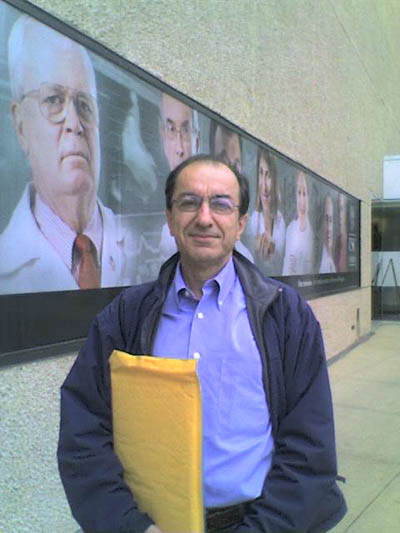
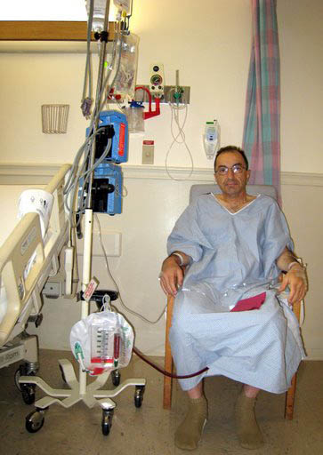
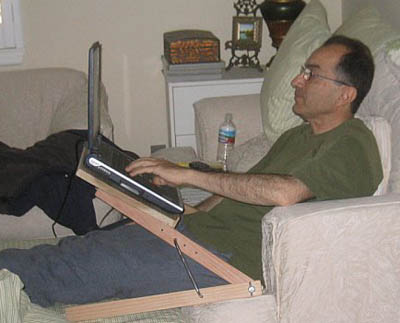

Copyright © Ali Parsa 1998-2011
All rights reserved
| USC's Norris Cancer Center |  |
 | After Surgery |
| I recuperated at Hossein Ansari's place in Woodland Hills, near Los Angeles. Hossein and Azadeh generously and kindly tolerated us for more than a week. Here I am using a laptop on a laptop stand I made myself just days before the operation. |  |

Copyright © Ali Parsa 1998-2011
All rights reserved